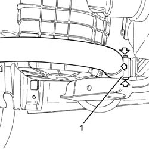
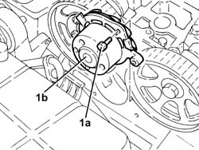
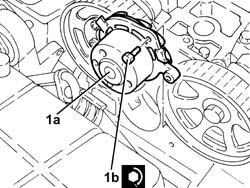

1088C10 water pump - r + r
- Path
- Procedures > 10 ENGINE > 1088 ENGINE COOLING > 1088C water pump and thermostat > 1088C10 water pump - r + r
- Kind
- repair procedure (removal / refitting; the operation number is the code)
- Applies to
- engines: 1.6 TS , 1.8 TS, 2.0 JTS, 1.9 JTD 16v, 2.0 JTS, 2.4 JTD 20v; all production periods
- Interactive page
- https://sloeber94.github.io/elrnDB-a156/en/#/3237710
Applies to: engines: 1.6 TS , 1.8 TS; all production periods
Applies to: engines: 2.0 JTS, 2.0 JTS; all production periods
 Removing
Removing
 Refitting
RefittingPosition the vehicle on the ramp.
Ensure that the ignition key is in OFF position, then disconnect the negative battery terminal.
 | Name | Connector |
|---|---|---|
- | Battery |
Proceed with removal 4450B04 right front wheel r r .
Proceed with removal 7055B54 under-engine guard - r r .
Proceed with removal 1016A40 ignition coil cover on cylinder head- r+r .
Proceed with removal 1032B10 toothed timing belt - r + r for timing adjustment or replacement .
1. Disconnect the lower coolant outlet hose from the radiator and drain the engine coolant.

Applies to: engines: 2.0 JTS, 2.0 JTS; all production periods
1. Undo the bolts (1a) and remove the water pump (1b) complete with O-ring.

Applies to: engines: 2.0 JTS, 2.0 JTS; all production periods
Refitting
Removing1. Place the water pump (1a), complete with O-Ring, back in its housing and secure it tightening the bolts (1b) to the recommended torque.
 | Fastening | Component | Ø | Value (daNm) |
|---|---|---|---|---|
1b | Bolt | COOLANT PUMP | M8 | (Cylinder head side) 2.3 ÷ 2.8 |

Applies to: engines: 2.0 JTS, 2.0 JTS; all production periods
Connect the rapid attachment for the bottom coolant outlet hose from the radiator.
Proceed with refitting 1032B10 toothed timing belt - r + r for timing adjustment or replacement .
Proceed with refitting 1016A40 ignition coil cover on cylinder head- r+r .
Proceed with refitting 7055B54 under-engine guard - r r .
Proceed with refitting 4450B04 right front wheel r r .
Connect the negative (-) battery terminal.
Refill the engine cooling system with coolant 0010T20 coolant change .
Remove the car from the ramps.
Applies to: engines: 1.9 JTD 16v; all production periods
Removing
RefittingProceed with removal 1016A10 sound-proofing cover - r + r .
Proceed with removal 1008C10 power unit upper reaction link r r .
Proceed with removal 1060G80 ds electric injection control unit - r r .
Proceed with removal 4450B04 right front wheel r r .
Proceed with removal 7055B54 under-engine guard - r r .
Proceed with removal - 7055B91 Right front WHEEL ARCH LINER - R.R. .
Proceed with removal 1092G10 single engine belt r r .
Proceed with removal 1092A10 Crankshaft services PULLEY - R.R. .
Proceed with removal 1092G20 engine component single belt fixed tensioner - one - r + r .
Proceed with removal 1032D12 timing system protective cover(s) - r + r .
Proceed with removal 1032B10 toothed timing belt - r + r for timing adjustment or replacement .
Proceed with removal 1088C14 water pump - r + r with drive belt removed .
Applies to: engines: 1.9 JTD 16v; all production periods
Refitting
RemovingProceed with refitting 1088C14 water pump - r + r with drive belt removed .
Proceed with refitting 1032B10 toothed timing belt - r + r for timing adjustment or replacement .
Proceed with refitting 1032D12 timing system protective cover(s) - r + r .
Proceed with refitting 1092G20 engine component single belt fixed tensioner - one - r + r .
Proceed with refitting 1092A10 Crankshaft services PULLEY - R.R. .
Proceed with refitting 1092G10 single engine belt r r .
Proceed with refitting - 7055B91 Right front WHEEL ARCH LINER - R.R. .
Proceed with refitting 7055B54 under-engine guard - r r .
Proceed with refitting 4450B04 right front wheel r r .
Proceed with refitting 1060G80 ds electric injection control unit - r r .
Proceed with refitting 1008C10 power unit upper reaction link r r .
Proceed with refitting 1016A10 sound-proofing cover - r + r .
Applies to: engines: 2.4 JTD 20v; all production periods
Removing
RefittingProceed with removal 4450B04 right front wheel r r .
Proceed with removal 7055B54 under-engine guard - r r .
Proceed with removal - 7055B91 Right front WHEEL ARCH LINER - R.R. .
Proceed with removal - 7055B66 Engine compartment DUST SHIELD protection in right front wheel arch - R.R. .
Proceed with removal 1092G10 single engine belt r r .
Proceed with removal 1092A10 Crankshaft services PULLEY - R.R. .
Proceed with removal 1092G21 engine component single belt fixed tensioner - r rwith belt removed .
Proceed with removal 1016A10 sound-proofing cover - r + r .
Proceed with removal 1008C10 power unit upper reaction link r r .
Proceed with removal 1032D12 timing system protective cover(s) - r + r .
Proceed with removal 1032B10 toothed timing belt - r + r for timing adjustment or replacement .
Proceed with removal 1088C14 water pump - r + r with drive belt removed .
Applies to: engines: 2.4 JTD 20v; all production periods
Refitting
RemovingProceed with refitting 1088C14 water pump - r + r with drive belt removed .
Proceed with refitting 1032B10 toothed timing belt - r + r for timing adjustment or replacement .
Proceed with refitting 1032D12 timing system protective cover(s) - r + r .
Proceed with refitting 1008C10 power unit upper reaction link r r .
Proceed with refitting 1016A10 sound-proofing cover - r + r .
Proceed with refitting 1092G21 engine component single belt fixed tensioner - r rwith belt removed .
Proceed with refitting 1092A10 Crankshaft services PULLEY - R.R. .
Proceed with refitting 1092G10 single engine belt r r .
Proceed with refitting - 7055B66 Engine compartment DUST SHIELD protection in right front wheel arch - R.R. .
Proceed with refitting - 7055B91 Right front WHEEL ARCH LINER - R.R. .
Proceed with refitting 7055B54 under-engine guard - r r .
Proceed with refitting 4450B04 right front wheel r r .
Refill the engine cooling system with coolant 0010T20 coolant change .
Topics linked from this page (16)
- 0010T20 coolant change
- 1008C10 power unit upper reaction link r r
- 1016A10 sound-proofing cover - r + r
- 1016A40 ignition coil cover on cylinder head- r+r
- 1032B10 toothed timing belt - r + r for timing adjustment or replacement
- 1032D12 timing system protective cover(s) - r + r
- 1060G80 ds electric injection control unit - r r
- 1088C12 water pump - r+r for versions with air conditioner
- 1088C14 water pump - r + r with drive belt removed
- 1092A10 Crankshaft services PULLEY - R.R.
- 1092G10 single engine belt r r
- 1092G20 engine component single belt fixed tensioner - one - r + r
- 1092G21 engine component single belt fixed tensioner - r rwith belt removed
- 4450B04 right front wheel r r
- 7055B54 under-engine guard - r r
- A1B Battery ( BATTERY NEGATIVE )